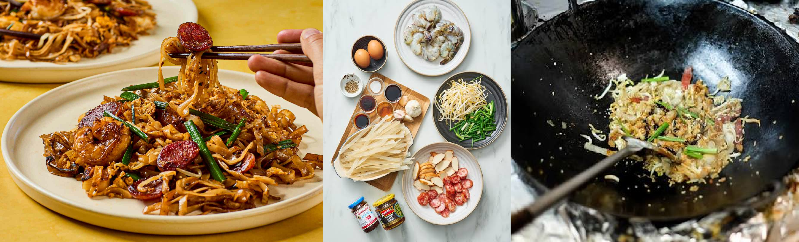
Char Kway Teow (炒粿條), or kwetiau goreng, is a nutrient-dense stir-fried noodle dish. In Hokkien and Teochew, char means 'stir-fried' and kway teow refers to flat rice noodles. This dish was originally created in China, however it has achieved widespread popularity within the Maritime South East Asian region. Char Kway Teow has now been adapted by these countries, birthing numerous regional variations of the dish.
Across all regional styles of Char Kway Teow, the dish immediately entices you through a prominent, smoky fragrance that awakens the appetite. This aromatic allure is matched by a captivating interplay of textures, chewy rice noodles that both contrast and complement the accompanying ingredients. Each mouthful is completed by a savory, glistening coating from high-heat stir-frying, which glides smoothly on the palate to leave a delightfully rich finish.
We chose to create a website for Char Kway Teow because of our individual fondness for the dish, the personal memories associated with it, and its delicious flavor profile. This unique opportunity lets us immerse ourselves in the deep cultural roots of a dish we often encounter while showcasing how a simple street food transformed into a global culinary icon.
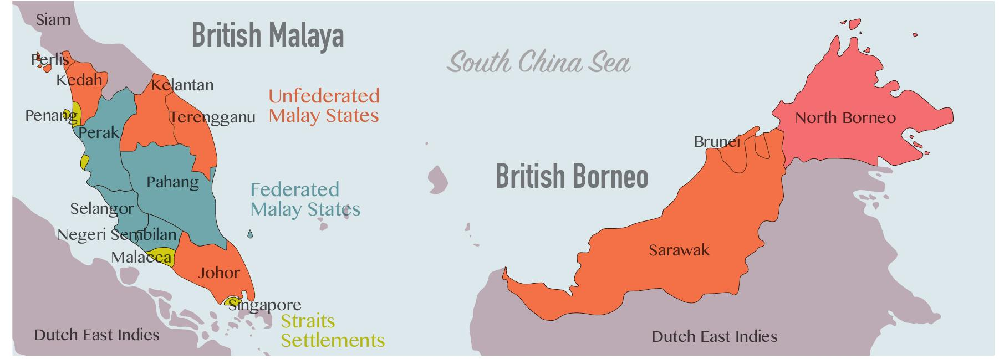
The dish evolved into its modern form during the 19th century in the trading ports of colonial malaya (Malaysia & Singapore). Chinese immigrant laborers, fisherman, and coolies adopted it as an inexpensive, high calorie meal, cooking leftover flat rice noodles over roaring charcoal fires with accessible ingredients like pork lard, garlic, chives, bean sprouts, and cockles to achieve its signature smoky wok hei flavor.
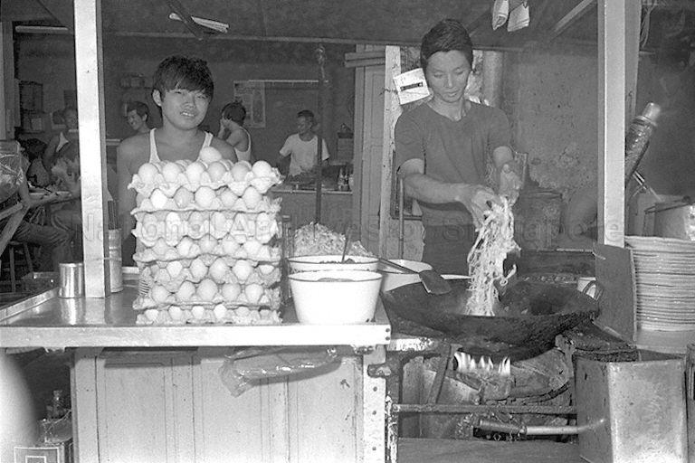
Over time, the dish spread widely and adapted to local preferences and palates across different countries. For example:
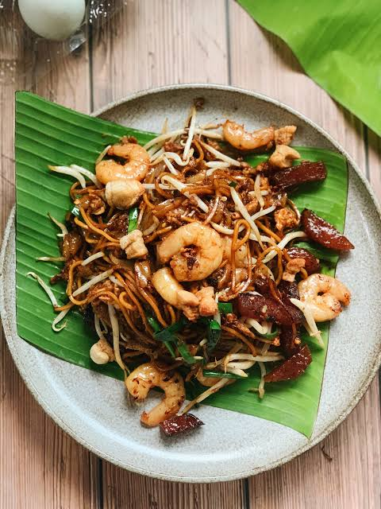
In Malaysia, the Penang style is famous for its use of duck eggs and fresh prawns.
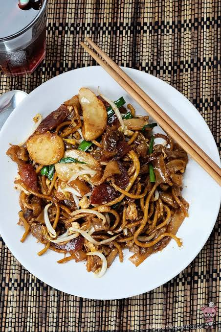
In Singapore the dish often combines flat rice noodles with yellow wheat noodles and Chinese sausage (lup cheong).
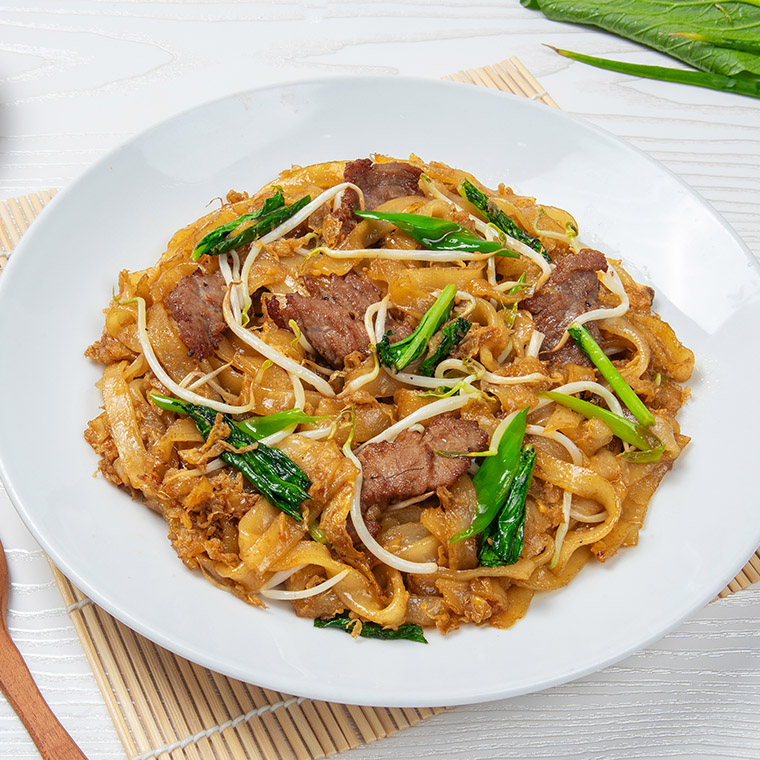
In Indonesia, kwetiau became deeply rooted through Chinese diaspora communities and evolved into popular local favorites such as kwetiau goreng tossed in sweet soy sauce.
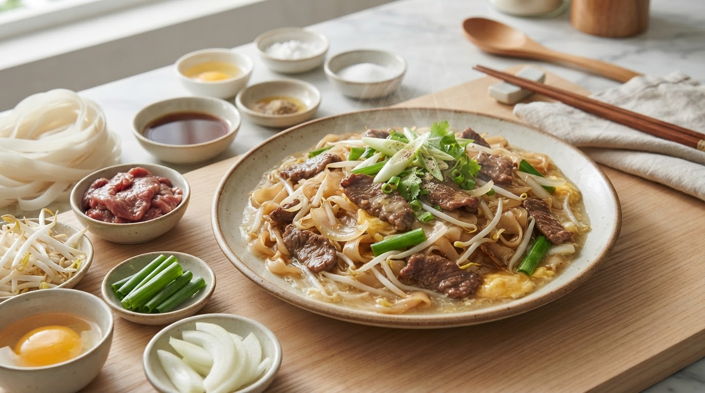
In Indonesia, kwetiau became deeply rooted through Chinese diaspora communities and evolved into popular local favorites such as the gravy-drenched kwetiau siram.
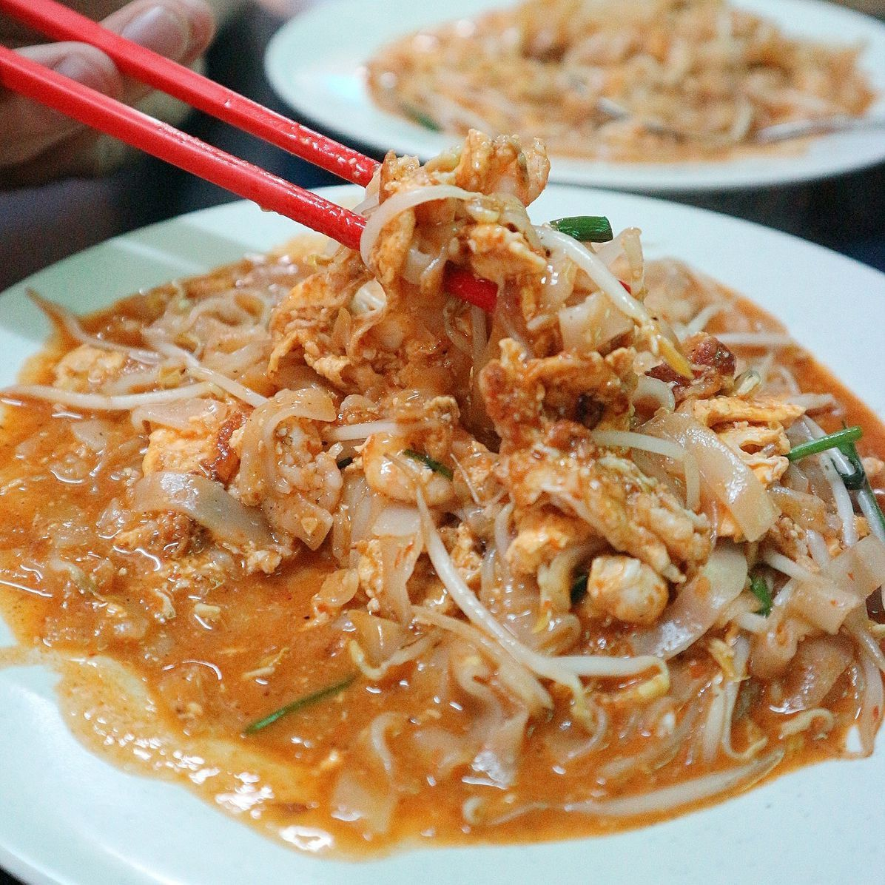
A regional specialty of kwetiau adapted by Indonesians.
Culturally and historically Char Kway Teow shows the true identity of Chinese roots from Southern China especially the Teochew people Originally this humble dish started from local Chinese food traditions brought by working immigrants to maritime Southeast Asia During the nineteenth century mass migration it became a powerful symbol of strength for laborers fishermen and coolies who desperately needed an affordable savory and high calorie meal to sustain their heavy daily work
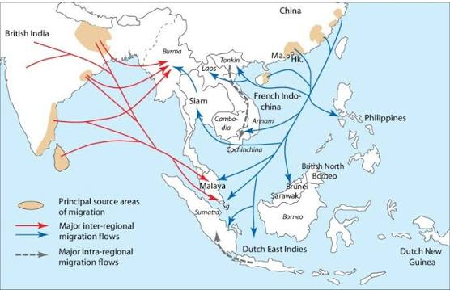
As a direct result this simple preparation grew far beyond basic food building strong connections and community bonds among people living in bustling port areas The smoky smell from the roaring charcoal wok mixed smoothly with flat rice noodles garlic chives and rich pork lard creates an amazing culinary experience Contrastingly even though manual workers and coolies ate it in the past just to survive its social status has now completely changed into a famous street food favorite everywhere
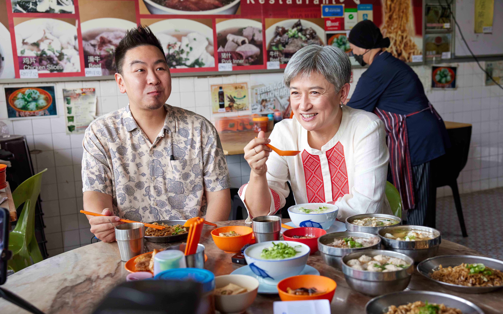
Tradition in this dish acts as a living heritage that connects different countries across Southeast Asia today Through its changes and adaptations across regions from Penang seafood styles to Indonesian sweet soy sauce versions Char Kway Teow proudly keeps its deep cultural meaning as a lasting symbol of shared memory community spirit and ancestral hard work
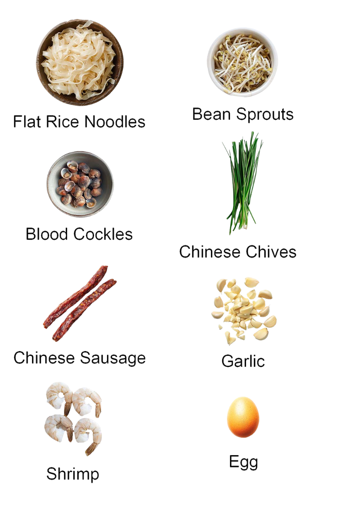
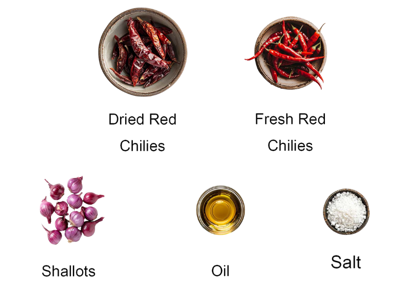
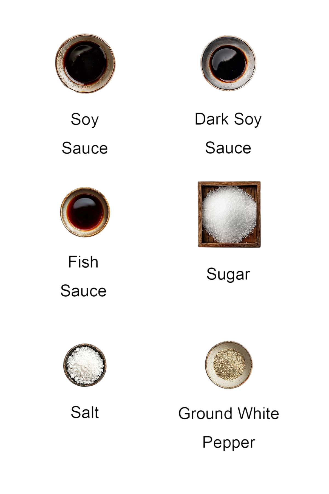
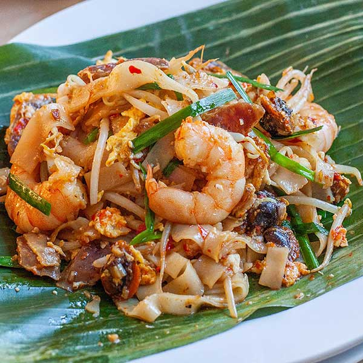
If you've reached this last page, thank you for spending the time. We hope that you've gained a deeper cultural and historical understanding of Char Kway Teow.